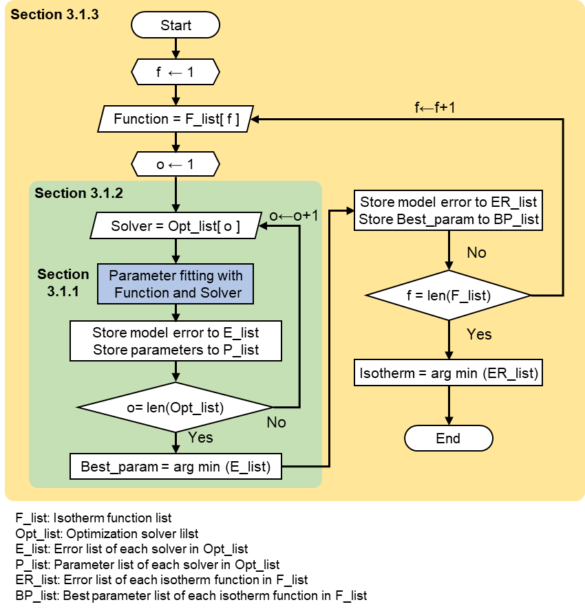

Isotherm fitting module (pyAPEP.isofit)
This module enables to develop pure and mixture isotherm functions from pressure and uptake data samples.
First, import isofit into Python after installation.
import pyAPEP.isofit as isofit
In this module, three main functions exist.
Finding best isotherm function (
isofit.best_isomodel)Fitting isotherm for different temperature (
isofit.fit_diffT)Developing mixuture isotherm with RAST (
isofit.rast)
Detailed description of each function are described in next senction. The explanation include function usage, algorithm (or related theroy), and function structure.
Usage
1. Finding best isotherm function
Function to find best isotherm model for given datast with multiple isotherm and optimizer candidates.
# Data import
P = [2, 3, 4, 5]
q = [1, 2, 3, 4]
# Find best isotherm function
best_isotherm, parameters, fn_type, val_err = isofit.best_isomodel(P, q)
2. Fitting isotherm for different temperature
Using heat of adsorption, isotherm parameter fitting at different temperature.
# Data import
P = [2, 3, 4, 5]
q = [1, 2, 3, 4]
# Find best isotherm function
best_isotherm, parameters, fn_type, val_err = isofit.best_isomodel(P, q)
3. Developing mixuture isotherm with IAST
IAST : Ideal adsorbed solution Theory
Option 1) Users can define their own isotherm function for each components,
# Pure isotherm definition
def iso1(P, T):
nume =1*0.05*P
deno = 1+0.05*P
q = nume/deno
return q
def iso2(P,T):
nume = 2*0.1*P
deno = 1+0.1*P
q = nume/deno
return q
# Develop mixture isotherm
iso_mix = lambda P,T : isof.IAST([iso1, iso2], P, T)
Option 2) Or use developed isotherm function from isofit.best_isomodel
P = [2, 3, 4, 5]
q_comp1 = [1, 2, 3, 4] # Gas adsorption of component 1
q_comp2 = [1, 5, 7, 10] # Gas adsorption of component 2
# Define pure isotherm of each component
iso1, param1, fn_type1, val_err1 = isofit.best_isomodel(P, q_comp1)
iso2, param2, fn_type2, val_err2 = isofit.best_isomodel(P, q_comp2)
# Develop mixture isotherm
iso_mix = lambda P,T : isof.IAST([iso1, iso2], P, T)
Function structures
- pyAPEP.isofit.best_isomodel(P, q, iso_par_nums=[2, 3, 4], iso_fun_lists=None, iso_fun_index=None, tol=1e-05)[source]
Function to automatically find best isotherm model for given datast with multiple isotherm and optimizer candidates.
Models supported are as follows. Here, \(q\) is the gas uptake, \(P\) is partial pressure (fugacity technically).
- Parameters:
P – Partial pressure list
q – Acutal or simulated uptake list of given P
iso_par_nums – The number of parameters for isotherm models
iso_fun_lists – Isotherm function candidates
iso_fun_index – Each name for iso_fun_lists
tol – Tolerance
- Returns:
isotherm function, estimated parameters of isotherm function, the type of isotherm, and validation error of the model
- pyAPEP.isofit.fit_diffT(p_list, q_list, T_list, i_ref, iso_par_nums=[2, 3, 4], iso_fun_lists=None, iso_fun_index=None, tol=1e-05)[source]
Function to fit isotherm model for given datast based on the different temperatures.
- Parameters:
p_list – Partial pressure list
q_list – Acutal or simulated uptake list of given P
T_list – Temperature list
i_ref – Reference temperature index in T_list
iso_par_nums – The number of parameters for isotherm models
iso_fun_lists – Isotherm function candidates
iso_fun_index – Each name for iso_fun_lists
tol – Tolerance
- Returns:
var_return (isotherm function, isotherm parameters, errors, calculated heat of adsorption, reference temperature, a list of :math:` heta_{T_{j}}`)
Theory
Finding best isotherm function algorithm
This module enables to automatically develop pure and mixture isotherm functions from pressure and uptake data samples. Below figure shows the schematic diagram of the algorithm to find the best isotherm function.
{kind=link}
Objective function of isotherm fitting
Estimation of the isotherm function is the same as solving an optimization problem as the following equation.
where \(q\), \(N_{fit}\), and \(K\) refer to gas uptake, the number of data samples for isotherm fitting, and isotherm parameters, respectively. \(f\) means the isotherm function, and \(\hat{q}\) is the predicted uptake from \(f\). By solving the objective function, the isotherm parameters are derived that satisfy the minimum error between actual and predicted uptake data.
Optimization with multiple optimization methods
To find the best isotherm parameters, isofit module considers five optimization solvers. Optimization solvers are given by the public python package, scipy, and those are Nelder-mead, Powell, COBYLA, shgo, and differential evolution. The solver with the minimum objective function is selected and the isotherm function is derived as the following equation.
Isotherm model selection
isofit.best_isomodel automatically find the best isotherm function by applying the above equations to five different isotherm functions. Five isotherm functions are described in below table. Then, the solvers and parameters could be found for each isotherm function. Among isotherm functions, a function with the smallest objective function value is selected as the best isotherm function.
parameters |
Name |
Equation |
|---|---|---|
1 |
Arrh |
\(q(P) =e^{\frac{\vartriangle H}{R} \left (\frac {1}{T}-\frac {1}{T_{ref}} \right)}\) |
2 |
Lang |
\(q(P) = M\frac{KP}{1+KP}\) |
Freu |
\(q(P) = kP^n\) |
|
3 |
Quad |
\(q(P) = M \frac{(K_a + 2 K_b P)P}{1+K_aP+K_bP^2}\) |
Sips |
\(q(P) =\frac{q_m K P^n}{1+K P^n}\) |
|
4 |
DSLang |
\(q(P) = M_1 \frac{K_1 P}{1+K_1 P} + M_2 \frac{K_2 P}{1+K_2 P}\) |
Note
The user should provide a data sample in consideration of the number of parameters of the model to be used as candidates. For example, if you want to include the Dualsite Langmuir function in candates, the user needs more than three data samples.
Adosption at different temperature (using heat of adsorption)
where \(H_{ads,i}\) is heat of adsorption and \(T_{ref}\) is reference temperature.
Ideal adsorbed solution theory (IAST)
IAST derives a mixture function from pure isothrm functions in consideration of competitive adsorption between components. IAST assumes the following:
The temperature is fixed and the pure isotherm are measured at the same temperature.
The thermodynamic property of the adsorbent during the adsorption is negligible.
Each adsorbate has access to the same area of adsorbent surface.
A Gibbs dividing surface defines an adsorbed phase.
From Raoults’ law, we need to find solid mole fraction \(x_i\), which is the uptake.
Raoult’ law
Spreading pressure
where, \(\pi_i^{\circ}\) is the reduced spreading pressure, \(f_i(P)\) is the pure isotherm model.
For components \(i = 1, 2, ..., N\), the pure component spreading pressure \(\pi_i\) at pressure \(P^{\circ}_i\) are all equal to the spreading pressure of the mixture \(\pi\).
Find the spreading pressure for all components with \(x_{guess}\), until that spreading pressure of mixture is the same with that of each components. check the spreading pressure from \(x_i\) until the difference between \(\pi_i\) and \(\pi_j\) becomes smaller than the tolerance.